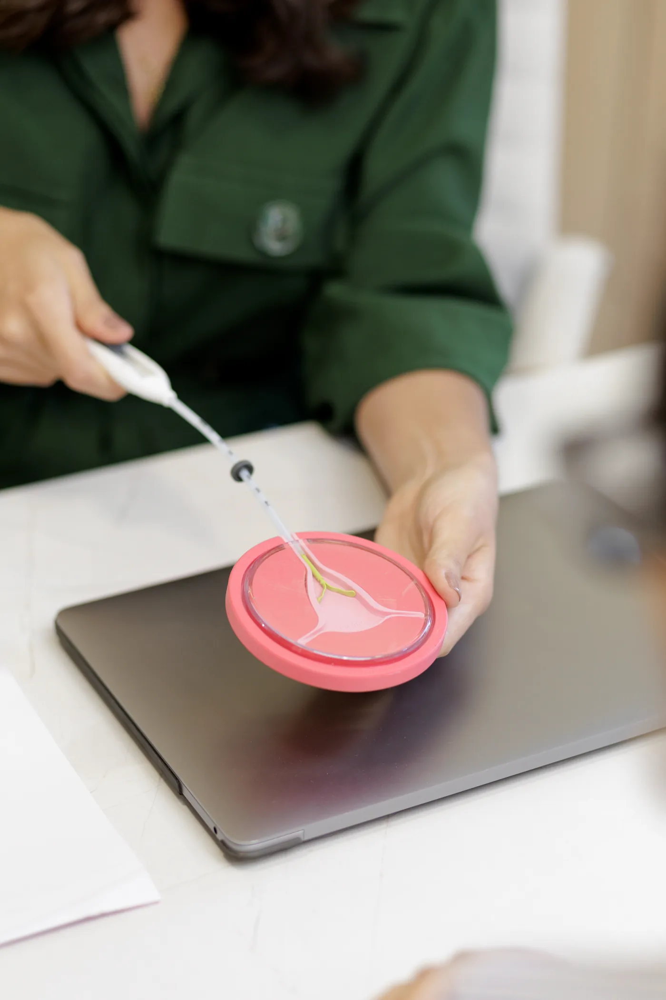

DIU, Implanon ou pílula: existe um método melhor?
A melhor escolha não começa pelo nome do método. Ela começa pela sua história, pela sua rotina e pelo que você espera para este momento da vida.
Antes de continuar
Este conteúdo ajuda você a organizar dúvidas, mas não substitui uma avaliação médica. Indicações, contraindicações e possíveis efeitos variam de pessoa para pessoa.
Não existe um único método melhor para todas as mulheres. Existe uma escolha que pode ser mais coerente com o seu momento, sua saúde, sua rotina e seus planos.
Duas pessoas da mesma idade podem receber orientações diferentes. Uma pode querer um método de longa duração e sem a necessidade de lembrar todos os dias. Outra pode preferir um método que possa interromper por conta própria. Também entram nessa conversa o padrão menstrual, o histórico de saúde, o desejo de engravidar no futuro e a forma como cada corpo responde.
Por isso, comparar apenas duração, dose hormonal ou popularidade costuma deixar a decisão incompleta. Esses dados são importantes, mas ganham sentido quando são avaliados junto da sua história.
Antes de comparar os métodos
Três perguntas ajudam a tornar a escolha mais consciente.
Elas não definem sozinhas o método indicado, mas ajudam a chegar à consulta com uma conversa mais clara.
Como é a sua rotina?
Você se adapta bem a um cuidado diário ou prefere algo que exija menos lembrança no dia a dia?
Como está o seu ciclo?
Fluxo, cólicas, sangramentos irregulares e outros sintomas fazem parte da avaliação.
Quais são os seus planos?
O desejo de engravidar, agora ou mais adiante, ajuda a contextualizar duração e reversibilidade.
Conhecer sem decidir sozinha
Métodos diferentes atendem a necessidades diferentes.
A comparação abaixo é um ponto de partida. Ela não substitui a análise de histórico, sintomas, exames e preferências individuais.

DIUs
Cobre ou hormonal
São métodos de longa duração inseridos no útero. Existem opções sem hormônio e opções hormonais. Padrão de sangramento, cólicas, histórico clínico e preferência pessoal precisam entrar na conversa.
Implante subdérmico
Implanon
É colocado sob a pele do braço e também tem longa duração. Alterações no padrão de sangramento podem acontecer, por isso a expectativa da paciente e a avaliação médica são importantes.
Uso diário
Pílulas contraceptivas
Há diferentes formulações e esquemas de uso. A rotina diária, o histórico de saúde e possíveis contraindicações precisam ser considerados antes de iniciar ou trocar uma pílula.
Outras possibilidades
A conversa não termina aqui
Existem outros métodos e combinações possíveis. O objetivo da consulta é entender quais alternativas merecem ser avaliadas no seu caso — e quais não fazem sentido para você.
O papel da consulta
Você não precisa chegar com a decisão pronta.
Levar dúvidas é suficiente. A consulta existe justamente para transformar informação solta em uma decisão individualizada.
Revisar seu histórico de saúde, medicamentos, sintomas e experiências anteriores.
Entender o que você deseja evitar, preservar ou melhorar neste momento.
Apresentar benefícios, limitações e possíveis efeitos de cada alternativa aplicável.
Definir se é necessário exame físico, exames complementares ou uma etapa presencial.
Uma possibilidade para a primeira conversa
Você sabia que a sua primeira consulta também pode ser online?
Quando a distância ou a rotina dificultam o atendimento presencial, a consulta online pode ser um primeiro passo para conversar sobre contracepção, planejamento reprodutivo e acompanhamento ginecológico.
A Dra. Bárbara pode conhecer sua história, orientar as possibilidades e avaliar quais próximos passos fazem sentido. Quando houver necessidade de exame físico ou procedimento, o atendimento presencial será indicado.
Para chegar mais tranquila
Dúvidas frequentes
Preciso escolher o método antes da consulta?
Um método hormonal é sempre pior?
A consulta online substitui o exame físico?
Posso enviar meus exames antes da consulta?
Quem conversa com você
Dra. Bárbara Santiago
Médica ginecologista especialista em reprodução humana, com atuação em contracepção, planejamento reprodutivo, climatério e saúde ginecológica.
CRM 230244 · RQE 105823 – Ginecologia · RQE 105823-1 – Reprodução
“Meu papel é apresentar caminhos com clareza, para que cada paciente possa tomar decisões mais seguras sobre o próprio corpo.”